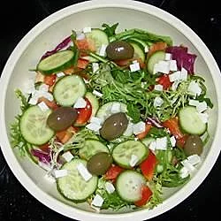

Greek Salad

Description
This is an incredibly good Greek salad recipe, nice and tangy and even
better in the summer when you use fresh vegetables!
Ingredients
- 1 head romaine lettuce- rinsed, dried and chopped
- 1 red onion, thinly sliced
- 1 (6 ounce) can pitted black olives
- 1 green bell pepper, chopped
- 1 red bell pepper, chopped
- 2 large tomatoes, chopped
- 1 cucumber, sliced
- 1 cup crumbled feta cheese
- 6 tablespoons olive oil
- 1 teaspoon dried oregano
- 1 lemon, juiced
- ground black pepper to taste
Steps
-
In a large salad bowl, combine the Romaine, onion, olives, bell peppers,
tomatoes, cucumber and cheese.
-
Whisk together the olive oil, oregano, lemon juice and black pepper.
Pour dressing over salad, toss and serve.